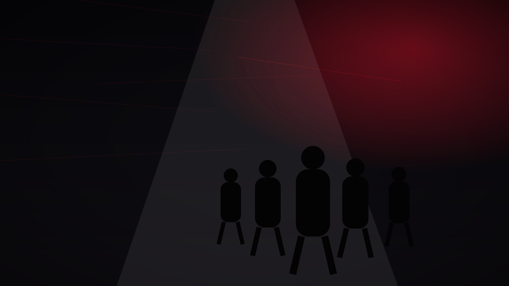

Encuesta mensual 1-10 y análisis cualitativo.

Métricas · dashboard · revisión
Medir orgullo, retención, referencias y movimiento real.
El dato principal no es la visualización aislada. La métrica central es si el miembro siente orgullo real de pertenecer a BNI The Región.
Dashboard regional
Lo que realmente importa.
Métricas seleccionadas para saber si la comunidad genera cultura, participación y oportunidades reales.
Actividad real de Givers Gain con seguimiento mensual.
Comparativa trimestral por grupo.
Asistencia mensual y cohesión entre grupos.
Visualizaciones e interacciones semanales.
Capacidad de atracción de la región.
Cadencia
Revisión mensual, lectura trimestral.
No basta con mirar números sueltos. Hay que convertirlos en decisiones de contenido, formación y conexión entre grupos.
Semanal
Publicaciones activas, interacciones, comentarios, contenidos publicados.
Ajuste rápido de calendario y formatos.
Mensual
Orgullo de pertenencia, participación en Café Digital y volumen de referencias.
Revisión con equipo de liderazgo regional.
Trimestral
Retención, renovación, nuevas visitas y evolución por grupo.
Presentación a directores de grupo y decisiones de escalado.
Si el orgullo sube, el resto de indicadores se mueve.La métrica central es pertenencia
Interlinking
Siguiente movimiento.
Cada página conecta con el siguiente bloque estratégico para que la navegación sea circular, clara y orientada a acción.
Medir no es controlar. Es saber qué merece repetirse.
La región se fortalece cuando los datos ayudan a reconocer, mejorar y conectar mejor.